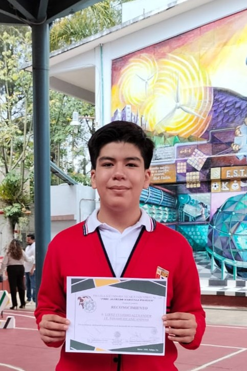

Sobre Mí
Alexander López Culebro
Estudiante de Matemáticas y Programación
3er año de secundaria, Instituto Educativo Panamericano Campus Ánimas
Email: xan.nsqk@gmail.com
GitHub: lc-xander
Teléfono: +52 228 346 2016

Soy un estudiante apasionado por las matemáticas y la programación, actualmente cursando el tercer año de secundaria en Xalapa, Veracruz. Inspirado por la pura curiosidad y el deseo de aprender, me he sumergido en el mundo de la programación, explorando diferentes lenguajes y tecnologías. Me encanta resolver problemas matemáticos y no solo encontrar soluciones, sino también entender los procesos detrás de ellas. Mi objetivo es seguir creciendo en este campo y contribuir con proyectos que tengan un impacto positivo en la sociedad que me rodea.
En mis tiempos libres, me gusta además producir música y valoro la creatividad que se requiere para componer y ejecutar canciones.
Contenido
Experiencia
Miembro del Mateclub de la UV
Septiembre-Diciembre 2026
4to lugar en Olimpiada de Matemáticas, etapa zona 05
13 de marzo de 2026
Proyectos
¿Cuánto pesas en otros planetas?
Proyecto hecho para un trabajo escolar donde se calcula el peso de una persona en diferentes planetas del sistema solar. El código fuente en Python está disponible aquí en mi GitHub.
Calculadora de vectores
Proyecto hecho para comprender más sobre funciones matemáticas en Python. El código fuente está disponible aquí en mi GitHub.
Y aún más por venir...
Música
Además de la programación y las matemáticas, me gusta producir música como pasatiempo; siempre estoy abierto a aprender horizontes nuevos.
Mi música en SoundCloud
Mi música en YouTube
Mi proyecto más reciente
Mi proyecto más reciente es mi álbum "Una parte de mí", en el cual intenté explorar nuevos géneros y experimentar, además de ir aprendiendo en el proceso de producción musical. Puedes escucharlo en SoundCloud y YouTube.